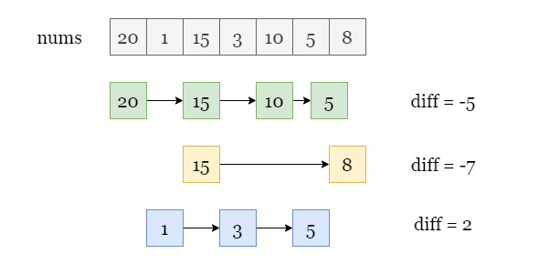
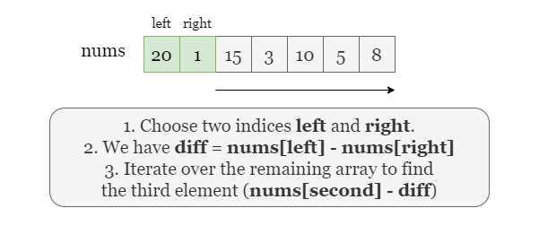
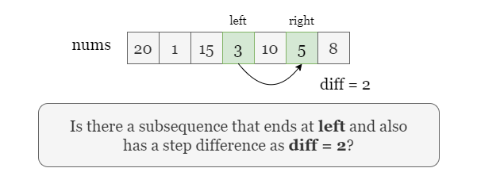
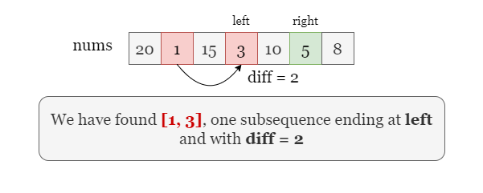
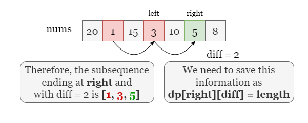
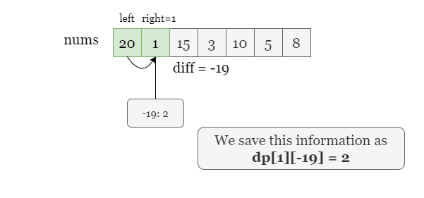

1 / 11
Let's explain with the example provided in the problem. We found several sequences from the array and their common
differences diff.

We can start with a brute-force approach. Since each arithmetic sequence always has a length greater than or equal to
2, we can try to find each pair of elements nums[left] and nums[right] that
form the first two elements of an arithmetic sequence by a nested iteration over nums.
For each pair of indices (left, right), we can determine the common difference diff = nums[right]
- nums[left] of the sequence they represent, and continue to traverse the array to the right of
right to find if there exists following elements. For example:
nums[right] and diff, we can find whether there exists a third element
nums[right] + diff to the right of nums[right].
However, the time complexity of this approach is too expensive. For an array of length nn, there are O(n2)O(n^2) possible pairs of starting elements, and for each pair, we may need to traverse the remaining O(n)O(n) elements. Therefore, the time complexity of this approach is O(n3)O(n^3), which is likely to exceed the time limit.

Instead of treating nums[left] and nums[right] as the starting elements of a sequence, we
can consider it as the last two elements of a sequence. Assuming that we have chosen indices left and
right, how can we determine the length of the sequence that ends with nums[left] and
nums[right]? Do we need to search backward from left as in the previous brute-force
approach? Not necessarily.

Instead, we can keep track of all possible arithmetic sequences that end with each element in the array, along with their common difference and length.
Assume we already know which arrays end at left and what their common difference and length are. Then,
we just need to search among these arrays to find if there is an array with a common difference diff =
nums[right] - nums[left] and what its length is! If there is, we can extend it to a new arithmetic
sequence by appending nums[right] and updating the length of the longest arithmetic sequence seen so
far. The problem only requires us to find the longest sequence, so we don't need to record the specific sequence but
only need to record their length and common difference.

As shown in the picture below, if we have recorded that there is a arithmetic sequence (1, 3) ending
at nums[left] with a common difference of 2, then we can just extend the sequence by
adding nums[right] to it as (1, 3, 5).

This method is called dynamic programming. We can use a 2D array dp to record the length of the longest
arithmetic sequence that ends with each element, as well as the common difference and the previous element of each
longest arithmetic sequence. Specifically, let dp[right][diff] represent the length of the longest
arithmetic sequence that ends with the element at index right and has a common difference of
diff. The state transition equation is:
dp[right][diff] = dp[left][diff] + 1
Where (left < right, diff = nums[right] - nums[left])
The final answer is the maximum value in dp.
As shown in the picture below, when we are at the index right = 1, we can save dp[1][-19] =
2, which means the longest arithmetic subsequence ending at index i and with a common difference
of -19 has a length of 2.

Let's take the following slides as an detailed example:
Initailize dp as memory to store the maximum length of subsequence that ends at
right and with a common difference of diff.
Iterate over the last index right, for each index:
Iterate over the second last index left, where left < right:
The common difference is nums[right] - nums[left].
Take dp[left][diff], the length of the longest subsequence ending at left
and with the same common difference. If there exists such a subsequence, dp[right][diff] =
dp[left][diff] + 1, if there is no such subsequence, initilalize dp[right][diff] =
2.
Return the maximum value in dp.
Java
class Solution {
public int longestArithSeqLength(int[] nums) {
int maxLength = 0;
HashMap[] dp = new HashMap[nums.length];
for (int right = 0; right < nums.length; ++right) {
dp[right] = new HashMap<>();
for (int left = 0; left < right; ++left) {
int diff = nums[left] - nums[right];
dp[right].put(diff, dp[left].getOrDefault(diff, 1) + 1);
maxLength = Math.max(maxLength, dp[right].get(diff));
}
}
return maxLength;
}
}
Python3
class Solution:
def longestArithSeqLength(self, nums: List[int]) -> int:
dp = {}
for right in range(len(nums)):
for left in range(0, right):
dp[(right, nums[right] - nums[left])] = dp.get((left, nums[right] - nums[left]), 1) + 1
return max(dp.values())
Let nn
be the length of the input array nums.
Time complexity: O(n2)O(n^2)
We have a nested iteration over nums, for each last index right, we iterate over
every second last index left.
Space complexity: O(n2)O(n^2)
We create dp as memory where dp[right][diff] stores the length of the longest
subsequence ending at index right and with a common difference of diff.
right = 1, it has 1 left to its left, so as the maximum number of unique
diff = nums[right] - nums[left].
right = 2, it has 2 left indices to its left, so as the maximum number of
unique diff.The maximum number of unique diff for an index right is right. Thus
there might be at most O(n2)O(n^2) distinct status (right, diff), so
dp stores at most O(n2)O(n^2) lengths.